1 NG201
1/59｜2025/11/23
7ECU2
多了哪些牌
 +2
+2 +2
+2 +2
+2 +1
+1 +1
+1 +1
+1 +1
+1 +1
+1少了哪些牌
 -3
-3 -3
-3 -2
-2 -1
-1 -1
-1 -1
-1 主BP11-075/BP11-P17/EBD03-011：デッドペナルティ主卡组 × 3
主BP11-075/BP11-P17/EBD03-011：デッドペナルティ主卡组 × 3 主BP17-081/BP17-P19：ソウルガイド・エイミー主卡组 × 3
主BP17-081/BP17-P19：ソウルガイド・エイミー主卡组 × 3 主BP17-073/BP17-SL17/BP17-SP01/BP17-U07：友魂の少女・ルナ主卡组 × 3
主BP17-073/BP17-SL17/BP17-SP01/BP17-U07：友魂の少女・ルナ主卡组 × 3 主BP11-071/BP11-SL15/EBD03-007/PR-399：ストレイホロウ・イルガンノ主卡组 × 3主BP09-071/BP09-SL15/BP09-U05：幽霊支配人・アーカス主卡组 × 1主BP12-071/BP12-SL20/BP12-U05/EBD03-004：死期を視るもの・グレモリー主卡组 × 3主BP13-081/BP13-P19/EBD03-014：魂の一刀主卡组 × 1
主BP11-071/BP11-SL15/EBD03-007/PR-399：ストレイホロウ・イルガンノ主卡组 × 3主BP09-071/BP09-SL15/BP09-U05：幽霊支配人・アーカス主卡组 × 1主BP12-071/BP12-SL20/BP12-U05/EBD03-004：死期を視るもの・グレモリー主卡组 × 3主BP13-081/BP13-P19/EBD03-014：魂の一刀主卡组 × 1 主BP14-070/BP14-SL14：憧れの飛躍・イツルギ主卡组 × 3
主BP14-070/BP14-SL14：憧れの飛躍・イツルギ主卡组 × 3 主BP16-078/BP16-SL22/EBD03-002：ゴールドラッシュゴースト主卡组 × 2主BP13-076/EBD03-008/PR-351：一刀の幽鬼・カゲロウ主卡组 × 1
主BP16-078/BP16-SL22/EBD03-002：ゴールドラッシュゴースト主卡组 × 2主BP13-076/EBD03-008/PR-351：一刀の幽鬼・カゲロウ主卡组 × 1 主BP11-076/BP11-P18/EBD03-012：異形主卡组 × 3主BP16-079/BP16-P17：瞑地の天宮・ムカン主卡组 × 2主BP18-077/BP18-SL17/PR-482：佰死と佰亡の六銘伝・イルゼ＆ウルゼ主卡组 × 3
主BP11-076/BP11-P18/EBD03-012：異形主卡组 × 3主BP16-079/BP16-P17：瞑地の天宮・ムカン主卡组 × 2主BP18-077/BP18-SL17/PR-482：佰死と佰亡の六銘伝・イルゼ＆ウルゼ主卡组 × 3 主BP13-077/EBD03-009/PR-485：人外魔境・クリストフ主卡组 × 3
主BP13-077/EBD03-009/PR-485：人外魔境・クリストフ主卡组 × 3 主BP16-075/BP16-SL19/BP16-U05/EBD03-001：奔放なる獄炎・ケルベロス主卡组 × 3
主BP16-075/BP16-SL19/BP16-U05/EBD03-001：奔放なる獄炎・ケルベロス主卡组 × 3 主BP03-076/BP03-P21/EBD03-010：ブラックスワン・オディール主卡组 × 2主BP11-069/BP11-SL13/EBD03-005：カオスルーラー・アイシィレンドリング主卡组 × 1进BP11-077/BP11-P19/EBD03-013：異形进化 × 2进BP11-070/BP11-SL14/BP11-U05/EBD03-006：カオスルーラー・アイシィレンドリング进化 × 1进BP16-080/BP16-P18：瞑地の天宮・ムカン进化 × 2进BP17-082/BP17-P20：ソウルガイド・エイミー进化 × 1进BP18-078/BP18-SL18/BP18-U05：佰死と佰亡の六銘伝・イルゼ＆ウルゼ进化 × 2
主BP03-076/BP03-P21/EBD03-010：ブラックスワン・オディール主卡组 × 2主BP11-069/BP11-SL13/EBD03-005：カオスルーラー・アイシィレンドリング主卡组 × 1进BP11-077/BP11-P19/EBD03-013：異形进化 × 2进BP11-070/BP11-SL14/BP11-U05/EBD03-006：カオスルーラー・アイシィレンドリング进化 × 1进BP16-080/BP16-P18：瞑地の天宮・ムカン进化 × 2进BP17-082/BP17-P20：ソウルガイド・エイミー进化 × 1进BP18-078/BP18-SL18/BP18-U05：佰死と佰亡の六銘伝・イルゼ＆ウルゼ进化 × 2 进BP14-071/BP14-SL15/PR-386：楽園の終焉・イツルギ进化 × 2+2+2+2+1+1+1+1+1-3-3-2-1-1-1+3
进BP14-071/BP14-SL15/PR-386：楽園の終焉・イツルギ进化 × 2+2+2+2+1+1+1+1+1-3-3-2-1-1-1+3 +3+2
+3+2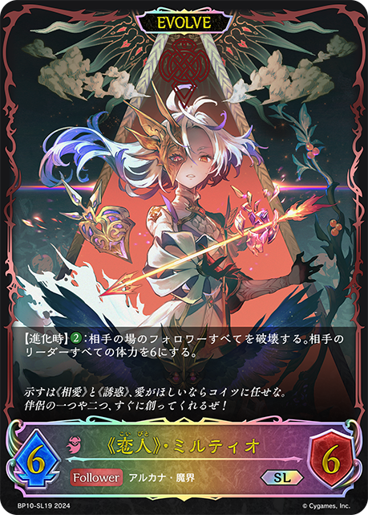
+1+1 +1+1-3-3-1-1-1-1-1-1+2+1
+1+1-3-3-1-1-1-1-1-1+2+1 +1+1-1-1-1-1-1+1-1+3+1+1+1+1+1+1-3-2-1-1-1-1+2+1+1+1-1-1-1-1-1+2
+1+1-1-1-1-1-1+1-1+3+1+1+1+1+1+1-3-2-1-1-1-1+2+1+1+1-1-1-1-1-1+2 +2+1+1-3-1-1-1+3
+2+1+1-3-1-1-1+3 +2+2
+2+2 +2+1+1+1-3-3-2-1-1-1-1+2+1+1+1+1-3-1-1-1+2+1+1+1-1-1-1-1-1+2+2+1+1+1
+2+1+1+1-3-3-2-1-1-1-1+2+1+1+1+1-3-1-1-1+2+1+1+1-1-1-1-1-1+2+2+1+1+1 +1-3-1-1-1-1-1+2+2+2+1+1+1+1+1-3-3-2-1-1-1+2+1+1+1+1+1+1+1-3-2-1-1-1-1+1+1+1+1+1-1-1-1-1-1+1+1+1+1+1+1+1-2-2-1-1-1+1+1+1+1+1-1-1-1-1-1+2+1+1+1-1-1-1-1-1+2
+1-3-1-1-1-1-1+2+2+2+1+1+1+1+1-3-3-2-1-1-1+2+1+1+1+1+1+1+1-3-2-1-1-1-1+1+1+1+1+1-1-1-1-1-1+1+1+1+1+1+1+1-2-2-1-1-1+1+1+1+1+1-1-1-1-1-1+2+1+1+1-1-1-1-1-1+2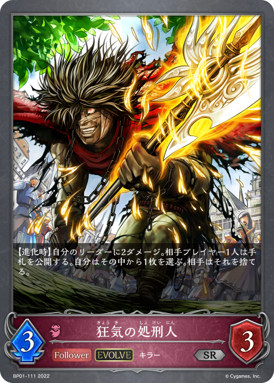
+1+1+1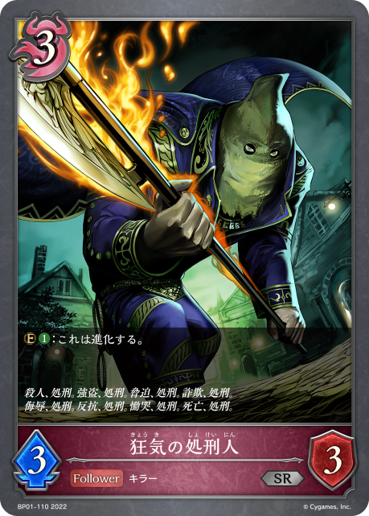
+1+1+1+1-3-2-1-1-1-1+2+1+1+1+1-1-1-1-1-1-1+1+1+1-1-1-1+2+1+1+1+1+1-2-2-1-1-1+3+3+2+1+1+1+1-3-3-1-1-1-1-1-1+2+1+1+1+1-1-1-1-1-1-1+1+1+1+1+1+1+1+1+1-3-2-1-1-1-1+1+1+1+1+1+1+1+1-3-2-1-1-1+2+1+1+1-1-1-1-1-1+3 +3
+3 +2+1+1+1+1-3-2-1-1-1-1-1-1-1+2+1+1+1+1-1-1-1-1-1-1+1+1+1+1+1-1-1-1-1-1+2+2+1+1+1+1-2-2-2-1-1+1+1+1+1+1+1
+2+1+1+1+1-3-2-1-1-1-1-1-1-1+2+1+1+1+1-1-1-1-1-1-1+1+1+1+1+1-1-1-1-1-1+2+2+1+1+1+1-2-2-2-1-1+1+1+1+1+1+1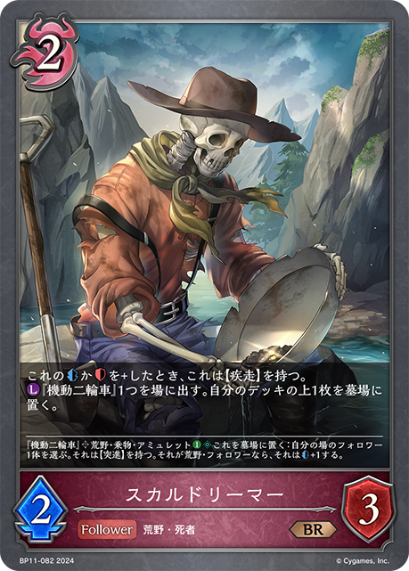
+1+1+1-3-2-1-1-1-1+2+1+1+1-1-1-1-1-1+1+1+1+1-1-1-1-1+3+3+2+1-3-2-1-1-1-1+3+3+2+1+1+1-3-3-1-1-1-1-1+2+1+1+1-1-1-1-1-1+1+1+1-1-1-1+1+1+1+1-1-1-1-1+1+1+1+1+1-1-1-1-1-1+1+1+1+1+1-1-1-1-1-1+2+1+1+1+1+1-1-1-1-1-1-1-1+2+2+1+1+1-3-1-1-1-1+2+2+1+1+1+1+1+1+1-3-2-2-1-1-1-1+2+2+1+1+1-3-1-1-1-1+1+1+1+1+1-1-1-1-1-1+2+2+1+1-3-1-1-1+2+1+1+1+1-1-1-1-1-1-1+1+1+1+1+1-1-1-1-1-1+1+1+1+1+1+1+1+1+1-3-2-1-1-1-1+1+1+1+1-1-1-1-1+1+1+1+1+1+1-1-1-1-1-1-1+1+1+1+1-1-1-1-1+3+3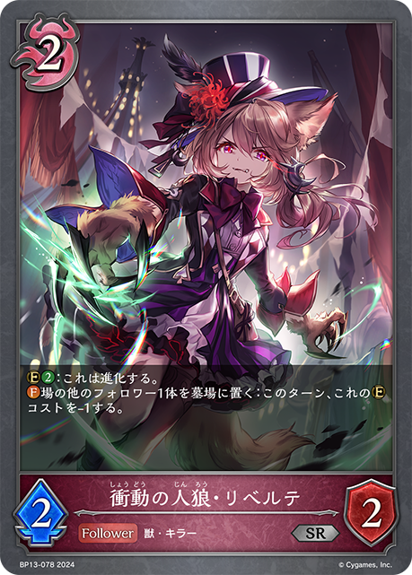
+3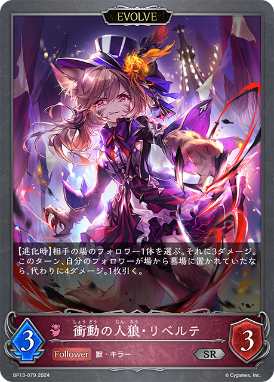
+2+1+1+1-3-2-2-2-2-1-1-1+2+1+1-1-1-1-1+2+1+1+1-1-1-1-1-1+2+2 +2+1+1+1+1-1-1-1-1-1-1-1-1-1+2+1+1+1+1-1-1-1-1-1-1+2+1+1+1+1-1-1-1-1-1-1+3+2+1+1+1-3-2-1-1-1+1+1+1+1-1-1-1-1+2+1+1+1-1-1-1-1-1+2+1+1+1+1-1-1-1-1-1-1+1+1+1+1-1-1-1-1+2+1+1+1+1-1-1-1-1-1-1+2+1+1+1-1-1-1-1-1+1+1+1+1-1-1-1-1+2+1+1+1-1-1-1-1-1+3+1+1+1-1-1-1-1-1-1+2+1+1+1-1-1-1-1+2+1+1+1-1-1-1-1-1+2+1+1-1-1-1-1+2+1+1+1+1-1-1-1-1-1-1+2+1+1+1-1-1-1-1-1+1+1+1-1-1-1+1+1+1+1-1-1-1-1+1+1+1+1-1-1-1-1+2+1+1+1+1-2-2-1-1+1+1+1-1-1-1-1+1+1+1+1-1-1-1-1+2+1+1+1-1-1-1-1-1+2+1+1+1-1-1-1-1-1+1+1+1-1-1-1+1+1-1-1+2+1+1+1+1+1-1-1-1-1-1-1-1+2+1+1+1-1-1-1-1-1+2+1+1+1+1+1-2-1-1-1-1-1+2+1+1+1-2-2-1+1+1+1-1-1+3+3+3+1+1+1-3-2-1-1-1-1-1-1-1+2+2+2+1+1+1+1-3-3-2-1-1+1+1+1-1-1-1+1+1+1+1-1-1-1-1+3+3+1+1+1+1+1-3-3-1-1-1-1-1
+2+1+1+1+1-1-1-1-1-1-1-1-1-1+2+1+1+1+1-1-1-1-1-1-1+2+1+1+1+1-1-1-1-1-1-1+3+2+1+1+1-3-2-1-1-1+1+1+1+1-1-1-1-1+2+1+1+1-1-1-1-1-1+2+1+1+1+1-1-1-1-1-1-1+1+1+1+1-1-1-1-1+2+1+1+1+1-1-1-1-1-1-1+2+1+1+1-1-1-1-1-1+1+1+1+1-1-1-1-1+2+1+1+1-1-1-1-1-1+3+1+1+1-1-1-1-1-1-1+2+1+1+1-1-1-1-1+2+1+1+1-1-1-1-1-1+2+1+1-1-1-1-1+2+1+1+1+1-1-1-1-1-1-1+2+1+1+1-1-1-1-1-1+1+1+1-1-1-1+1+1+1+1-1-1-1-1+1+1+1+1-1-1-1-1+2+1+1+1+1-2-2-1-1+1+1+1-1-1-1-1+1+1+1+1-1-1-1-1+2+1+1+1-1-1-1-1-1+2+1+1+1-1-1-1-1-1+1+1+1-1-1-1+1+1-1-1+2+1+1+1+1+1-1-1-1-1-1-1-1+2+1+1+1-1-1-1-1-1+2+1+1+1+1+1-2-1-1-1-1-1+2+1+1+1-2-2-1+1+1+1-1-1+3+3+3+1+1+1-3-2-1-1-1-1-1-1-1+2+2+2+1+1+1+1-3-3-2-1-1+1+1+1-1-1-1+1+1+1+1-1-1-1-1+3+3+1+1+1+1+1-3-3-1-1-1-1-1 +3
+3 +2
+2 +2+2
+2+2 +2
+2 +2+1+1-3-2-2-2-2-1-1-1-1+1+1+1+1+1-1-1-1-1-1+2+1+1+1+1+1-2-2-1-1-1+2+1+1+1+1+1-2-2-1-1-1+1+1+1-1-1+1+1+1+1-1-1-1-1+1+1+1-1-1-1+2+1+1+1+1-1-1-1-1-1-1+1+1+1+1-1-1-1-1+1+1+1+1+1+1+1+1+1-3-2-1-1-1-1+1+1+1+1+1-1-1-1-1-1-1+2+1+1-1-1-1-1+1+1+1+1-1-1-1-1+1+1+1+1+1-1-1-1-1-1+2+1+1+1-1-1-1-1-1+2+2+1-3-2-1-1-1-1-1+1+1+1+1-1-1-1-1+2+1+1+1-1-1-1-1-1+1+1+1+1-1-1-1-1+1+1+1-1-1-1+2+1+1+1+1-1-1-1-1-1-1+3+1-1-1-1-1+3+1+1+1+1-2-2-1-1-1+3+3+2+1+1+1-3-3-1-1-1-1-1+2+2+2+1+1+1+1+1-3-3-2-1-1-1+2+1+1-1-1-1-1+2+2+1+1+1-1-1-1-1-1-1-1+2+1+1-1-1-1-1+2+1+1+1+1-1-1-1-1-1-1+1+1+1+1-1-1-1-1+2+1+1+1-1-1-1-1-1+2+1+1+1-1-1-1-1-1+1+1+1+1-1-1-1-1+1+1+1-1-1-1+2+1+1-1-1-1-1+2+1+1+1-1-1-1-1-1+1
+2+1+1-3-2-2-2-2-1-1-1-1+1+1+1+1+1-1-1-1-1-1+2+1+1+1+1+1-2-2-1-1-1+2+1+1+1+1+1-2-2-1-1-1+1+1+1-1-1+1+1+1+1-1-1-1-1+1+1+1-1-1-1+2+1+1+1+1-1-1-1-1-1-1+1+1+1+1-1-1-1-1+1+1+1+1+1+1+1+1+1-3-2-1-1-1-1+1+1+1+1+1-1-1-1-1-1-1+2+1+1-1-1-1-1+1+1+1+1-1-1-1-1+1+1+1+1+1-1-1-1-1-1+2+1+1+1-1-1-1-1-1+2+2+1-3-2-1-1-1-1-1+1+1+1+1-1-1-1-1+2+1+1+1-1-1-1-1-1+1+1+1+1-1-1-1-1+1+1+1-1-1-1+2+1+1+1+1-1-1-1-1-1-1+3+1-1-1-1-1+3+1+1+1+1-2-2-1-1-1+3+3+2+1+1+1-3-3-1-1-1-1-1+2+2+2+1+1+1+1+1-3-3-2-1-1-1+2+1+1-1-1-1-1+2+2+1+1+1-1-1-1-1-1-1-1+2+1+1-1-1-1-1+2+1+1+1+1-1-1-1-1-1-1+1+1+1+1-1-1-1-1+2+1+1+1-1-1-1-1-1+2+1+1+1-1-1-1-1-1+1+1+1+1-1-1-1-1+1+1+1-1-1-1+2+1+1-1-1-1-1+2+1+1+1-1-1-1-1-1+1 +1+1
+1+1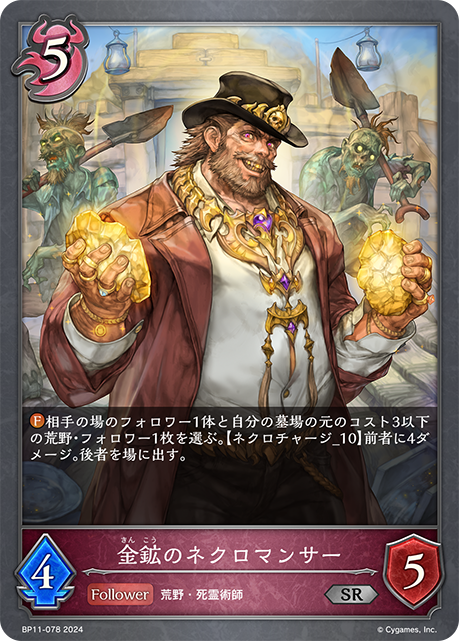
+1+1 +1-1-1-1-1-1-1+1+1+1+1+1-3-1-1
+1-1-1-1-1-1-1+1+1+1+1+1-3-1-1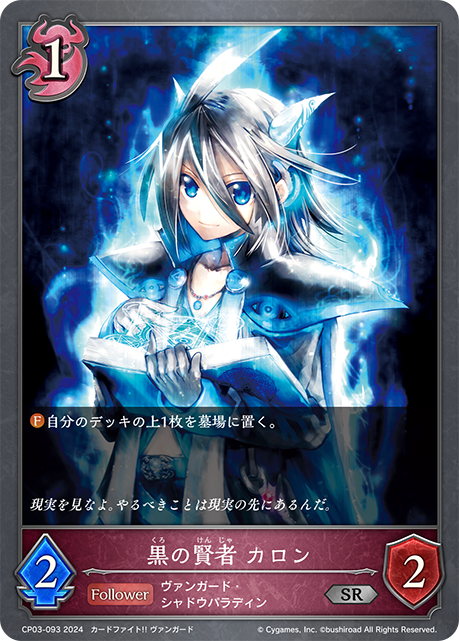
+3+2+2+1+1+1+1-3-1-1-1-1-1-1-1-1+2+1+1+1-1-1-1-1-1+1-1+2+1+1+1+1-1-1-1-1-1-1+2+1+1+1+1-1-1-1-1-1-1+2+1+1+1+1-1-1-1-1-1-1+1+1+1+1-1-1-1-1+2+1+1+1+1+1-1-1-1-1-1-1-1+3+3+2+1+1+1+1-3-3-1-1-1-1-1-1+1+1+1+1-1-1-1-1+3 +3
+3 +2+1+1-2-2-1-1-1-1-1-1+2+1+1-1-1-1-1+2+1+1+1-1-1-1-1-1+2+2+1+1+1+1-2-1-1-1-1-1-1+1+1+1+1-1-1-1-1+2+1+1+1+1-2-2-1-1+2+1+1+1-1-1-1-1-1+2+1+1+1+1+1-2-2-2-1
+2+1+1-2-2-1-1-1-1-1-1+2+1+1-1-1-1-1+2+1+1+1-1-1-1-1-1+2+2+1+1+1+1-2-1-1-1-1-1-1+1+1+1+1-1-1-1-1+2+1+1+1+1-2-2-1-1+2+1+1+1-1-1-1-1-1+2+1+1+1+1+1-2-2-2-1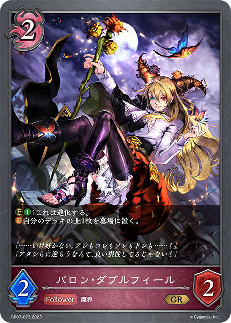
+3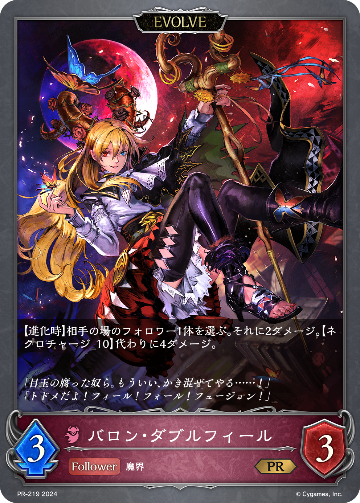
+2+1+1+1+1-3-2-1-1-1-1+2+1+1+1+1+1+1-3-2-1-1-1+1+1-1-1+2+1+1-1-1-1-1+2+1+1+1-1-1-1-1-1+2+2+1+1+1+1+1+1+1-3-3-2-1-1-1+2+1+1+1-1-1-1-1-1+1+1+1+1-1-1-1-1+1+1+1+1-1-1-1-1+2+1+1-1-1-1-1+1+1+1+1-1-1-1-1+2+1+1-1-1-1-1+1+1+1-1-1-1+1+1+1-1-1-1+2+2+1+1-1-1-1-1-1-1+1-1+3+3+2+1+1+1-2-2-2-1-1-1-1+2+1+1+1-1-1-1-1-1+2+1+1+1+1+1+1-2-2-2-1-1+2+1+1+1+1-1-1-1+2+1+1-1-1-1-1+3+2+2 +2+1
+2+1 +1+1+1-3-2-1-1-1-1-1-1+2+1+1-1-1-1-1+1+1+1+1-1-1-1-1+1+1+1+1+1-1-1-1-1-1
+1+1+1-3-2-1-1-1-1-1-1+2+1+1-1-1-1-1+1+1+1+1-1-1-1-1+1+1+1+1+1-1-1-1-1-1 +3+3
+3+3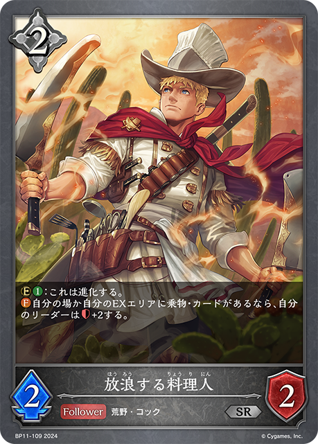
+3+3+3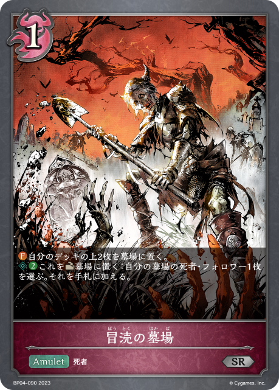
+2+2+2+1+1-3-3-3-3-2-2-2-2-1-1-1+1+1+1+1+1-1-1-1-1-1+2+1+1+1+1+1-2-2-1-1-1+3+1-1-1-1-1+3+3+2+1+1+1+1-3-3-1-1-1-1-1-1+2+1+1-1-1-1-1+1+1+1+1+1-1-1-1-1-1+3+2+1+1+1+1-3-2-1-1-1-1+3+3 +3+2+1+1-2-2-2-1-1-1-1-1-1-1+2+2+1+1+1-3-1-1-1-1+1+1+1+1-1-1-1-1+2+1+1+1+1+1+1-2-1-1-1-1-1-1+1+1+1+1+1-1-1-1-1-1+2+1+1+1-1-1-1-1-1+2+1+1+1-1-1+2+1+1+1+1-1-1-1-1-1-1+2+1+1+1-1-1-1-1-1+1+1+1+1-1-1-1-1+3+1+1-1-1-1-1-1+1+1+1-1-1-1+2+2+1+1+1+1+1+1+1-3-2-2-1-1-1-1
+3+2+1+1-2-2-2-1-1-1-1-1-1-1+2+2+1+1+1-3-1-1-1-1+1+1+1+1-1-1-1-1+2+1+1+1+1+1+1-2-1-1-1-1-1-1+1+1+1+1+1-1-1-1-1-1+2+1+1+1-1-1-1-1-1+2+1+1+1-1-1+2+1+1+1+1-1-1-1-1-1-1+2+1+1+1-1-1-1-1-1+1+1+1+1-1-1-1-1+3+1+1-1-1-1-1-1+1+1+1-1-1-1+2+2+1+1+1+1+1+1+1-3-2-2-1-1-1-1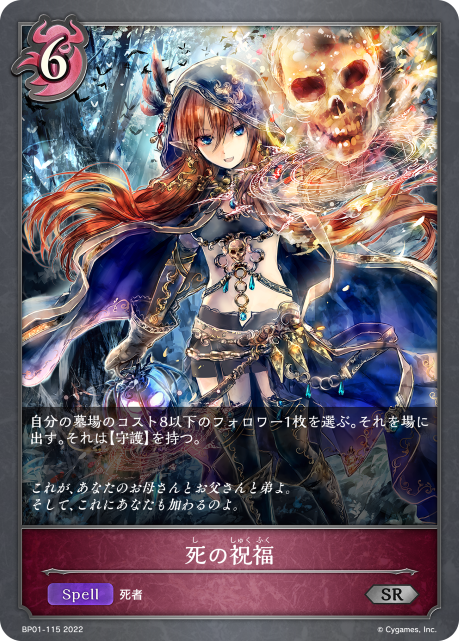
+3+3 +3
+3 +3
+3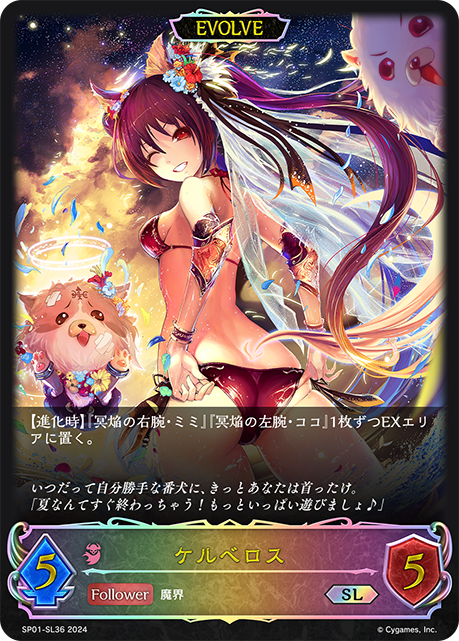
+2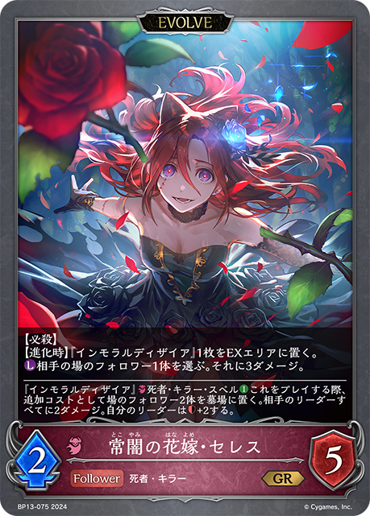
+2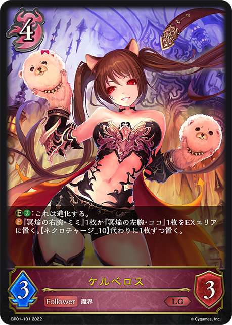
+2+2 +2
+2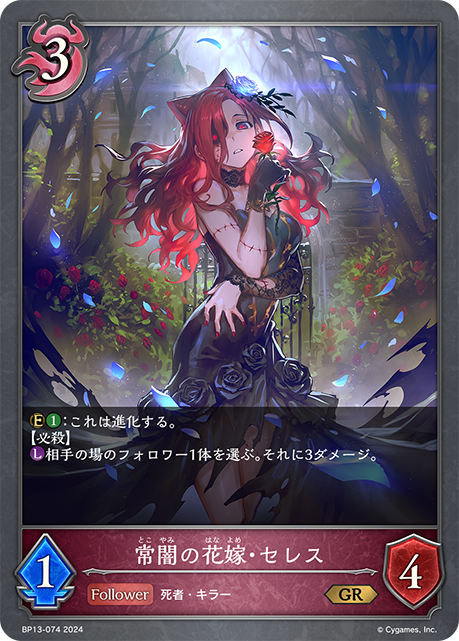
+2 +2+1+1
+2+1+1 +1+1-3-3-2-2-2-2-1-1-1-1-1-1+2+2+1+1+1+1-3-2-1-1-1+3+2+2+1+1+1+1+1+1-3-2-1-1-1-1-1-1+1+1+1+1+1-1-1-1-1-1+2+2+1+1+1-2-1-1-1-1-1+2+1+1+1-1-1-1-1+2+1+1+1-1-1-1-1-1+3+3+2+1+1+1+1+1+1-3-3-2-2-1-1-1-1+1+1+1+1-1-1-1-1+1+1+1-1-1-1+1+1+1-1-1-1+1+1+1-1-1-1+3+3+2+2+1+1+1+1+1+1+1+1-3-2-1-1-1+2+1+1+1+1-1-1-1-1-1-1+2+2+1+1+1+1+1+1-2-2-1-1-1-1-1-1+1+1+1+1-1-1-1-1+2+1+1-1-1-1-1+2+2+1+1-1-1-1-1-1-1+2+1+1+1-1-1-1-1-1+1+1+1-1-1-1-1+1+1+1+1-1-1-1-1+2+2+2
+1+1-3-3-2-2-2-2-1-1-1-1-1-1+2+2+1+1+1+1-3-2-1-1-1+3+2+2+1+1+1+1+1+1-3-2-1-1-1-1-1-1+1+1+1+1+1-1-1-1-1-1+2+2+1+1+1-2-1-1-1-1-1+2+1+1+1-1-1-1-1+2+1+1+1-1-1-1-1-1+3+3+2+1+1+1+1+1+1-3-3-2-2-1-1-1-1+1+1+1+1-1-1-1-1+1+1+1-1-1-1+1+1+1-1-1-1+1+1+1-1-1-1+3+3+2+2+1+1+1+1+1+1+1+1-3-2-1-1-1+2+1+1+1+1-1-1-1-1-1-1+2+2+1+1+1+1+1+1-2-2-1-1-1-1-1-1+1+1+1+1-1-1-1-1+2+1+1-1-1-1-1+2+2+1+1-1-1-1-1-1-1+2+1+1+1-1-1-1-1-1+1+1+1-1-1-1-1+1+1+1+1-1-1-1-1+2+2+2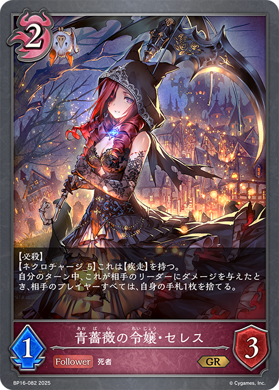
+2+1+1+1+1-3-3-2-1-1-1-1+3+2+2+1+1-3-1-1-1-1-1-1+2+1+1+1+1+1-1-1-1-1-1-1-1+3+3+2+1+1+1+1-3-3-1-1-1-1-1-1+3+3+2+1+1+1-3-3-1-1-1-1-1+2+1+1-1-1-1-1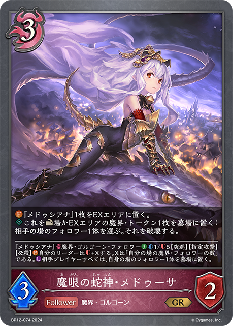
+3+3+2+2+2+2+2 +2+1
+2+1 +1+1+1+1
+1+1+1+1 +1-3-3-3-3-2-2-1-1-1-1-1-1-1-1+2+1+1+1-2-2-1+2+1+1+1+1-1-1-1-1-1-1+2+1+1+1-1-1-1-1-1+2+1+1+1-1-1-1-1-1+1+1+1+1-1-1-1-1+1+1+1+1-1-1-1-1+2+1+1+1+1+1+1-3-1-1-1-1-1+3+3+2+1+1+1+1+1+1-3-3-2-2-1-1-1-1+3+3+3+2+2+2+1-3-2-2-2-2-1-1-1-1-1+2+1+1+1+1+1-2-2-1-1-1+2+1+1+1-1-1-1-1-1+2+1+1+1-1-1-1-1-1+1+1+1+1+1-1-1-1-1-1+1+1+1-1-1+2+1+1-1-1-1-1+1+1+1+1-1-1-1-1+1+1+1-1-1-1+2+1+1+1-1-1+1+1+1+1+1-1-1-1-1-1+1+1+1+1+1-1-1-1-1-1+1+1+1+1+1+1-2-2-1-1+2+1+1+1+1+1-1-1-1-1-1-1-1+2+1+1+1+1-1-1-1-1-1-1+3+2+2+1+1+1-3-2-1-1-1-1-1+1+1+1+1-1-1-1-1+2+1+1+1+1+1-2-2-1-1-1+1+1+1+1-1-1-1-1+2+2+1+1-1-1-1-1-1-1+2+1+1+1-1-1-1-1-1+1+1+1-1-1-1+2+1+1+1+1-1-1-1-1-1-1+3+3+3+2+1+1+1-3-2-2-2-2-1-1-1+1+1+1+1+1-1-1-1-1-1+2+1+1+1+1+1-2-1-1-1-1-1+2+1+1+1-1-1-1-1-1+2+1+1+1-2-2-1-1-1-1+2+2+1+1+1-2-1-1-1-1-1+1+1+1+1+1-1-1-1-1-1+2+1+1+1+1-1-1-1-1-1-1+1+1+1+1+1+1-1-1-1-1-1-1+1+1+1+1-1-1-1-1+1+1+1-1-1-1+1+1+1+1-1-1-1-1+2+1+1+1+1-1-1-1-1-1-1+2+1+1+1+1+1+1+1+1+1-3-2-2-1-1-1-1+2+1+1+1+1+1+1-2-1-1-1-1-1-1+3+3+2+1+1+1-3-3-1-1-1-1-1+2+1+1+1+1-1-1-1-1-1-1+2+1+1+1-1-1-1-1-1+1+1+1+1+1-1-1-1-1-1+2+1+1+1+1+1-1-1-1-1-1-1-1+2+1+1+1-1-1-1-1-1+2+1+1+1+1-1-1-1-1-1-1+3+2+2+1+1-3-3-1-1-1+2+1+1+1+1-2-1-1-1-1+2+1+1+1-1-1-1-1-1+1+1+1+1-1-1-1-1+3+1+1+1+1-1-1-1-1-1-1-1+2+1+1+1-1-1-1-1-1+2+1+1+1+1+1+1+1-3-2-1-1-1-1+1+1+1+1+1-1-1-1-1-1+1+1+1-1-1+3+3+2+2+2+1+1+1-3-3-3-2-1-1-1-1+2+1+1+1+1+1-3-2-1-1+2+1+1+1+1-1-1-1-1-1-1+3+2+1+1+1+1-3-2-1-1-1-1+2+1+1+1+1-1-1-1-1-1-1+1+1+1+1-1-1-1-1+2+2+1+1+1+1-3-1-1-1-1-1+2+1+1+1-1-1-1-1-1+2+2+1+1+1+1+1+1-3-2-1-1-1-1-1+3+3+2+1+1+1-3-3-1-1-1-1-1+2+2+1+1+1+1+1-1-1-1-1-1-1-1-1-1+1+1+1+1+1-1-1-1-1-1+2+1+1+1+1-1-1-1-1-1-1+1+1+1-1-1+2+1+1+1+1-1-1-1-1-1-1+2+1+1+1+1-1-1-1-1-1-1+1+1+1+1+1+1-2-2-1-1+2+1+1+1+1-1-1-1-1-1-1+2+2+1+1+1+1-2-2-2-1-1+2+2+1+1+1+1-2-2-2-1-1+2+1+1+1-1-1-1-1-1+2+1+1+1-1-1-1-1-1+1+1+1+1+1-1-1-1-1-1+2+1+1+1-1-1-1-1-1+2+1+1+1-1-1-1-1-1+2+1+1+1-1-1-1-1-1+2+1+1+1-1-1-1-1+1+1+1+1-1-1-1-1+2+1+1+1+1+1-1-1-1-1-1-1-1+2+1+1+1-1-1-1-1-1+1+1+1+1-1-1-1-1+1+1+1+1+1-1-1-1-1-1+2+1+1+1+1+1-1-1-1-1-1-1-1+2+1+1+1-1-1-1-1-1+1+1
+1-3-3-3-3-2-2-1-1-1-1-1-1-1-1+2+1+1+1-2-2-1+2+1+1+1+1-1-1-1-1-1-1+2+1+1+1-1-1-1-1-1+2+1+1+1-1-1-1-1-1+1+1+1+1-1-1-1-1+1+1+1+1-1-1-1-1+2+1+1+1+1+1+1-3-1-1-1-1-1+3+3+2+1+1+1+1+1+1-3-3-2-2-1-1-1-1+3+3+3+2+2+2+1-3-2-2-2-2-1-1-1-1-1+2+1+1+1+1+1-2-2-1-1-1+2+1+1+1-1-1-1-1-1+2+1+1+1-1-1-1-1-1+1+1+1+1+1-1-1-1-1-1+1+1+1-1-1+2+1+1-1-1-1-1+1+1+1+1-1-1-1-1+1+1+1-1-1-1+2+1+1+1-1-1+1+1+1+1+1-1-1-1-1-1+1+1+1+1+1-1-1-1-1-1+1+1+1+1+1+1-2-2-1-1+2+1+1+1+1+1-1-1-1-1-1-1-1+2+1+1+1+1-1-1-1-1-1-1+3+2+2+1+1+1-3-2-1-1-1-1-1+1+1+1+1-1-1-1-1+2+1+1+1+1+1-2-2-1-1-1+1+1+1+1-1-1-1-1+2+2+1+1-1-1-1-1-1-1+2+1+1+1-1-1-1-1-1+1+1+1-1-1-1+2+1+1+1+1-1-1-1-1-1-1+3+3+3+2+1+1+1-3-2-2-2-2-1-1-1+1+1+1+1+1-1-1-1-1-1+2+1+1+1+1+1-2-1-1-1-1-1+2+1+1+1-1-1-1-1-1+2+1+1+1-2-2-1-1-1-1+2+2+1+1+1-2-1-1-1-1-1+1+1+1+1+1-1-1-1-1-1+2+1+1+1+1-1-1-1-1-1-1+1+1+1+1+1+1-1-1-1-1-1-1+1+1+1+1-1-1-1-1+1+1+1-1-1-1+1+1+1+1-1-1-1-1+2+1+1+1+1-1-1-1-1-1-1+2+1+1+1+1+1+1+1+1+1-3-2-2-1-1-1-1+2+1+1+1+1+1+1-2-1-1-1-1-1-1+3+3+2+1+1+1-3-3-1-1-1-1-1+2+1+1+1+1-1-1-1-1-1-1+2+1+1+1-1-1-1-1-1+1+1+1+1+1-1-1-1-1-1+2+1+1+1+1+1-1-1-1-1-1-1-1+2+1+1+1-1-1-1-1-1+2+1+1+1+1-1-1-1-1-1-1+3+2+2+1+1-3-3-1-1-1+2+1+1+1+1-2-1-1-1-1+2+1+1+1-1-1-1-1-1+1+1+1+1-1-1-1-1+3+1+1+1+1-1-1-1-1-1-1-1+2+1+1+1-1-1-1-1-1+2+1+1+1+1+1+1+1-3-2-1-1-1-1+1+1+1+1+1-1-1-1-1-1+1+1+1-1-1+3+3+2+2+2+1+1+1-3-3-3-2-1-1-1-1+2+1+1+1+1+1-3-2-1-1+2+1+1+1+1-1-1-1-1-1-1+3+2+1+1+1+1-3-2-1-1-1-1+2+1+1+1+1-1-1-1-1-1-1+1+1+1+1-1-1-1-1+2+2+1+1+1+1-3-1-1-1-1-1+2+1+1+1-1-1-1-1-1+2+2+1+1+1+1+1+1-3-2-1-1-1-1-1+3+3+2+1+1+1-3-3-1-1-1-1-1+2+2+1+1+1+1+1-1-1-1-1-1-1-1-1-1+1+1+1+1+1-1-1-1-1-1+2+1+1+1+1-1-1-1-1-1-1+1+1+1-1-1+2+1+1+1+1-1-1-1-1-1-1+2+1+1+1+1-1-1-1-1-1-1+1+1+1+1+1+1-2-2-1-1+2+1+1+1+1-1-1-1-1-1-1+2+2+1+1+1+1-2-2-2-1-1+2+2+1+1+1+1-2-2-2-1-1+2+1+1+1-1-1-1-1-1+2+1+1+1-1-1-1-1-1+1+1+1+1+1-1-1-1-1-1+2+1+1+1-1-1-1-1-1+2+1+1+1-1-1-1-1-1+2+1+1+1-1-1-1-1-1+2+1+1+1-1-1-1-1+1+1+1+1-1-1-1-1+2+1+1+1+1+1-1-1-1-1-1-1-1+2+1+1+1-1-1-1-1-1+1+1+1+1-1-1-1-1+1+1+1+1+1-1-1-1-1-1+2+1+1+1+1+1-1-1-1-1-1-1-1+2+1+1+1-1-1-1-1-1+1+1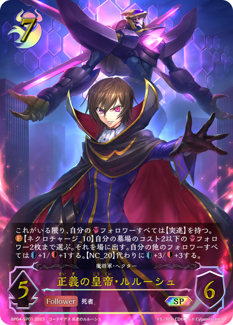
+1+1+1+1-1-1-1-1-1-1+2+1+1+1+1+1-2-2-1-1-1+2+1+1+1-1-1-1-1-1+2+2+1+1+1-1-1-1-1-1-1-1+2+1+1+1+1-1-1-1-1-1-1+2+1+1-1-1-1-1+1+1+1+1+1+1+1+1+1-3-2-1-1-1-1+2+2+1+1+1+1+1-3-3-2-1+1+1+1+1-1-1-1-1+2+1+1-1-1-1-1+1+1+1+1-1-1-1-1+3+3+3+2+2+2+2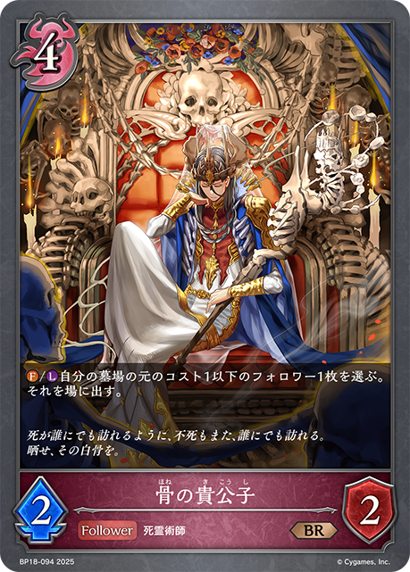
+2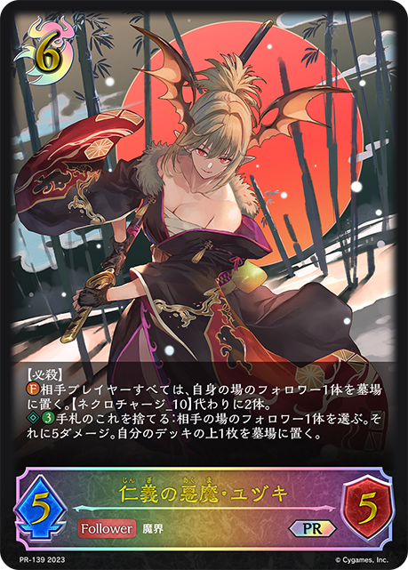
+2+1+1+1-3-3-3-3-2-2-2-1-1-1-1+1+1+1+1-1-1-1-1+1+1+1+1+1+1-1-1-1-1-1-1+2+1+1+1+1-1-1-1-1-1-1+2+2+1+1+1-2-1-1-1-1-1-1-1-1+1+1+1+1-1-1-1+2+1+1+1+1-1-1-1-1-1-1+1+1+1+1+1+1+1-2-2-1-1-1-1+3+3+3+1+1+1+1+1+1+1-3-3-3-2-2-1-1-1+2+1+1-1-1-1-1+3+2+2+1+1+1+1-3-2-1-1-1-1-1-1+2+2+1+1+1+1-3-1-1-1-1-1+2+1+1+1-1-1-1-1+2+1+1+1+1+1+1+1-3-2-1-1-1-1+1+1+1+1+1+1-1-1-1-1-1-1-1+2+2+1+1-1-1-1-1-1-1+2+2+1+1-1-1-1-1-1-1+2+1+1+1+1+1+1+1+1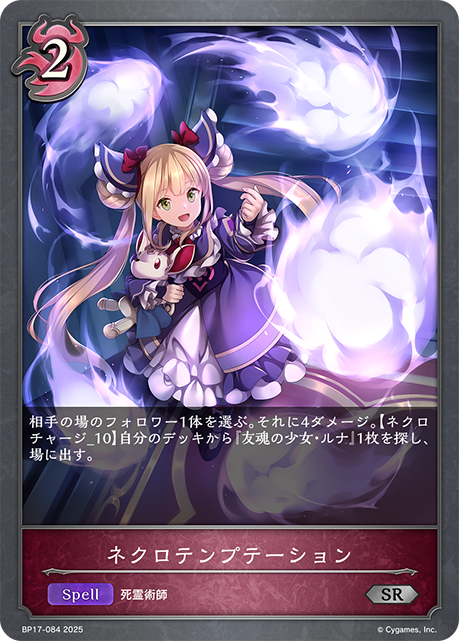
+1-3-2-1-1-1-1+1+1+1+1+1-1-1-1-1-1+1+1+1+1-1-1-1-1+2+1+1+1+1+1+1+1-3-1-1-1-1-1-1+2+1+1+1+1-1-1-1-1-1-1+1+1+1+1-1-1-1-1+2+2+2+1+1+1+1-3-3-1-1-1-1+2+1+1-1-1-1-1+2+1+1+1+1+1+1+1-3-2-1-1-1-1+2+1+1+1+1-3-1-1+2+1+1+1+1+1+1-2-2-1-1-1-1+2+1+1+1+1-1-1-1-1-1-1+2+1+1+1+1-1-1-1-1-1-1+3+3+1+1+1+1+1-3-3-1-1-1-1-1+2+1+1+1+1-1-1-1-1-1-1+2+2+1+1-2-1-1-1-1+2+1+1+1-1-1-1-1-1+1+1+1+1+1-1-1-1-1-1+2+2+1+1+1+1+1-3-3-2-1+1+1+1-1-1-1+2+1+1+1+1-1-1-1-1-1-1+2+2+1+1+1+1-1-1-1-1-1-1-1+2+2+1+1+1+1-3-1-1-1-1-1+3+1+1+1-1-1-1-1-1-1+2+1+1+1+1+1+1+1-3-2-1-1-1-1+2+2+1-3-1-1+1+1+1+1+1+1-1-1-1-1-1-1+2+1+1+1+1+1+1+1-3-2-1-1-1-1+2+1+1+1+1-3-2-1+2+1+1+1-1-1-1-1-1+1+1+1+1-1-1-1-1+2+1+1-1-1-1-1+2+1+1+1-1-1-1-1-1+2+1+1+1+1-1-1-1-1-1-1+3+3+3+2+2+2+1-3-2-2-2-2-1-1-1-1-1+2+1+1+1-1-1-1-1-1+2+1+1+1+1+1+1+1-3-2-1-1-1-1+1+1+1+1-1-1-1-1+2+2+1+1+1+1-2-2-2-1-1+2+1+1-1-1-1-1+2+1+1+1+1+1-1-1-1-1-1-1-1+2+1+1+1-1-1-1-1-1+3+2+1+1+1+1-2-2-1-1-1-1+2+2+1+1+1+1+1-1-1-1-1-1-1-1-1-1+3+3+3+2+1+1+1+1-3-2-2-2-2-1-1-1-1+1+1+1+1-1-1-1-1+2+2+1+1-2-2-2-1-1-1-1-1+1+1+1-1-1-1+3+1+1-1-1-1-1-1+1+1+1+1-1-1-1-1| 图片 | 平均张数 | 使用率 | 0张比例 | 1张比例 | 2张比例 | 3张比例 |
|---|---|---|---|---|---|---|
|
3.00 | 100.0% | 0.0% | 0.0% | 0.0% | 100.0% |
|
2.98 | 100.0% | 0.0% | 0.0% | 1.5% | 98.5% |
|
2.99 | 99.7% | 0.3% | 0.0% | 0.5% | 99.2% |
|
2.98 | 99.5% | 0.5% | 0.3% | 0.0% | 99.2% |
|
2.09 | 99.5% | 0.5% | 4.0% | 81.2% | 14.3% |
|
2.90 | 99.0% | 1.0% | 0.3% | 6.3% | 92.5% |
|
2.92 | 98.7% | 1.3% | 0.8% | 2.5% | 95.5% |
|
2.54 | 96.7% | 3.3% | 4.5% | 26.8% | 65.4% |
|
2.87 | 96.0% | 4.0% | 0.3% | 0.8% | 95.0% |
|
2.68 | 94.7% | 5.3% | 1.8% | 12.5% | 80.5% |
|
2.71 | 94.2% | 5.8% | 0.5% | 10.3% | 83.5% |
|
1.74 | 93.0% | 7.0% | 13.8% | 77.4% | 1.8% |
|
1.62 | 90.2% | 9.8% | 32.6% | 43.6% | 14.0% |
|
2.43 | 85.5% | 14.5% | 0.5% | 12.8% | 72.2% |
|
1.33 | 80.2% | 19.8% | 33.3% | 40.9% | 6.0% |
|
0.43 | 22.8% | 77.2% | 9.5% | 6.3% | 7.0% |
|
0.35 | 20.6% | 79.4% | 10.5% | 5.8% | 4.3% |
|
0.22 | 20.1% | 79.9% | 18.0% | 2.0% | 0.0% |
|
0.29 | 18.8% | 81.2% | 10.8% | 6.0% | 2.0% |
|
0.27 | 12.3% | 87.7% | 1.5% | 7.0% | 3.8% |
|
0.17 | 7.8% | 92.2% | 0.5% | 5.5% | 1.8% |
|
0.05 | 3.8% | 96.2% | 3.3% | 0.3% | 0.3% |
|
0.05 | 1.8% | 98.2% | 0.0% | 0.0% | 1.8% |
|
0.05 | 1.8% | 98.2% | 0.3% | 0.0% | 1.5% |
|
0.05 | 1.8% | 98.2% | 0.0% | 0.8% | 1.0% |
|
0.04 | 1.8% | 98.2% | 0.3% | 1.3% | 0.3% |
|
0.03 | 1.8% | 98.2% | 0.5% | 1.3% | 0.0% |
|
0.02 | 1.5% | 98.5% | 1.3% | 0.0% | 0.3% |
|
0.02 | 1.5% | 98.5% | 1.3% | 0.3% | 0.0% |
|
0.03 | 1.3% | 98.7% | 0.0% | 0.5% | 0.8% |
| 0.03 | 1.0% | 99.0% | 0.0% | 0.0% | 1.0% | |
| 0.01 | 1.0% | 99.0% | 1.0% | 0.0% | 0.0% | |
| 0.01 | 1.0% | 99.0% | 1.0% | 0.0% | 0.0% | |
| 0.02 | 0.8% | 99.2% | 0.0% | 0.0% | 0.8% | |
|
0.02 | 0.8% | 99.2% | 0.0% | 0.0% | 0.8% |
|
0.02 | 0.8% | 99.2% | 0.0% | 0.3% | 0.5% |
|
0.02 | 0.8% | 99.2% | 0.0% | 0.3% | 0.5% |
| 0.02 | 0.8% | 99.2% | 0.0% | 0.5% | 0.3% | |
|
0.02 | 0.8% | 99.2% | 0.0% | 0.8% | 0.0% |
|
0.02 | 0.8% | 99.2% | 0.0% | 0.8% | 0.0% |
| 0.02 | 0.5% | 99.5% | 0.0% | 0.0% | 0.5% | |
| 0.01 | 0.5% | 99.5% | 0.3% | 0.3% | 0.0% | |
| 0.01 | 0.5% | 99.5% | 0.5% | 0.0% | 0.0% | |
|
0.01 | 0.3% | 99.7% | 0.0% | 0.0% | 0.3% |
|
0.01 | 0.3% | 99.7% | 0.0% | 0.0% | 0.3% |
| 0.01 | 0.3% | 99.7% | 0.0% | 0.0% | 0.3% | |
| 0.01 | 0.3% | 99.7% | 0.0% | 0.0% | 0.3% | |
| 0.01 | 0.3% | 99.7% | 0.0% | 0.3% | 0.0% | |
| 0.01 | 0.3% | 99.7% | 0.0% | 0.3% | 0.0% | |
| 0.01 | 0.3% | 99.7% | 0.0% | 0.3% | 0.0% | |
|
0.01 | 0.3% | 99.7% | 0.0% | 0.3% | 0.0% |
|
0.01 | 0.3% | 99.7% | 0.0% | 0.3% | 0.0% |
| 0.01 | 0.3% | 99.7% | 0.0% | 0.3% | 0.0% | |
| 0.01 | 0.3% | 99.7% | 0.0% | 0.3% | 0.0% | |
| 0.00 | 0.3% | 99.7% | 0.3% | 0.0% | 0.0% | |
| 0.00 | 0.3% | 99.7% | 0.3% | 0.0% | 0.0% | |
|
0.00 | 0.3% | 99.7% | 0.3% | 0.0% | 0.0% |
|
0.00 | 0.3% | 99.7% | 0.3% | 0.0% | 0.0% |
|
0.00 | 0.3% | 99.7% | 0.3% | 0.0% | 0.0% |
| 图片 | 平均张数 | 使用率 | 0张比例 | 1张比例 | 2张比例 | 3张比例 |
|---|---|---|---|---|---|---|
|
2.77 | 100.0% | 0.0% | 0.0% | 23.3% | 76.7% |
|
1.94 | 99.0% | 1.0% | 5.5% | 91.7% | 1.8% |
|
1.48 | 93.0% | 7.0% | 38.8% | 53.6% | 0.5% |
|
1.60 | 90.2% | 9.8% | 29.6% | 51.6% | 9.0% |
|
1.60 | 85.5% | 14.5% | 12.0% | 72.7% | 0.8% |
|
0.38 | 37.6% | 62.4% | 37.3% | 0.3% | 0.0% |
| 0.04 | 3.8% | 96.2% | 3.8% | 0.0% | 0.0% | |
|
0.05 | 1.8% | 98.2% | 0.0% | 0.8% | 1.0% |
|
0.04 | 1.8% | 98.2% | 0.3% | 1.3% | 0.3% |
|
0.03 | 1.8% | 98.2% | 0.3% | 1.5% | 0.0% |
| 0.01 | 1.0% | 99.0% | 1.0% | 0.0% | 0.0% | |
|
0.02 | 0.8% | 99.2% | 0.0% | 0.5% | 0.3% |
| 0.02 | 0.8% | 99.2% | 0.0% | 0.8% | 0.0% | |
|
0.02 | 0.8% | 99.2% | 0.0% | 0.8% | 0.0% |
| 0.01 | 0.5% | 99.5% | 0.0% | 0.5% | 0.0% | |
|
0.01 | 0.3% | 99.7% | 0.0% | 0.0% | 0.3% |
| 0.01 | 0.3% | 99.7% | 0.0% | 0.3% | 0.0% | |
| 0.01 | 0.3% | 99.7% | 0.0% | 0.3% | 0.0% | |
|
0.00 | 0.3% | 99.7% | 0.3% | 0.0% | 0.0% |
|
0.00 | 0.3% | 99.7% | 0.3% | 0.0% | 0.0% |